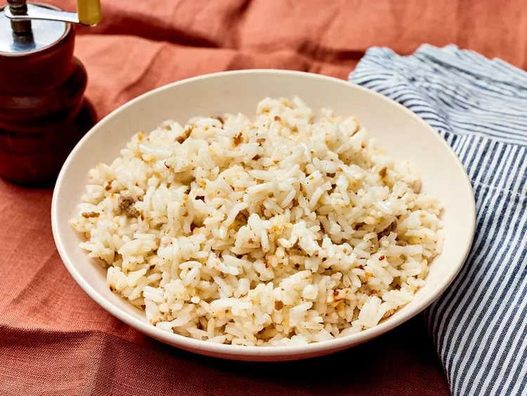

Garlic Rice

Description
This fried garlic rice is a simple Philippine dish bursting with flavor and aroma.
Ingredients
- 2 tablespoons of vegetable oil
- 2 tablespoons of ground pork
- 1 1/2 tablespoons of chopped garlic
- 4 cups of cooked white rice
- 1 1/2 teaspoons garlic salt
- ground black pepper to taste
Steps
- Gather the ingredients.
- Heat oil in a large skillet over medium-high heat. Cook and stir ground pork and garlic in hot oil
until garlic is golden brown; do not allow garlic to burn, or it will taste bitter.
- Stir in cooked rice; season with garlic salt and black pepper.
- Cook and stir until heated through and well blended, about 3 minutes.